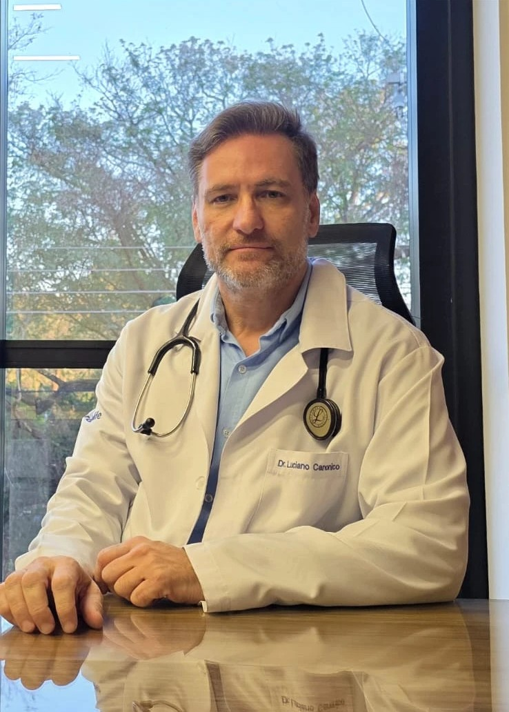
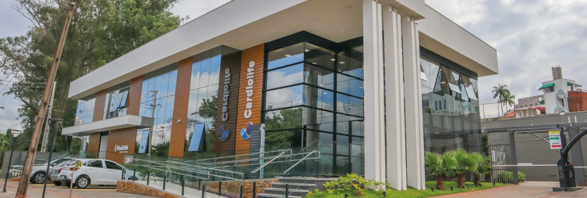

Exames laboratoriais
Serviço de coleta de sangue e urina.
Coleta na própria clínica, no mesmo lugar da consulta.
Cardiologia | Londrina (PR)
Dr. Luciano Canonico, cardiologista em Londrina.
Consultas, check-up e exames cardiológicos como ECG, Holter, MAPA e ecocardiograma, com uma visão integrada da sua saúde.

Equipamentos modernos e equipe qualificada para realizar e interpretar os exames, tudo na mesma estrutura, com praticidade e conforto.
Serviço de coleta de sangue e urina.
Coleta na própria clínica, no mesmo lugar da consulta.
Avaliação clínica de doenças cardiovasculares.
O ponto de partida para entender e cuidar do seu coração.
Exame para prevenção e diagnóstico precoce de doenças cardiovasculares.
Indicado mesmo sem sintomas, principalmente com fatores de risco.
Exame diagnóstico para diversas doenças cardíacas estruturais ou do ritmo cardíaco.
Rápido, indolor e feito na própria clínica.
Exame diagnóstico para doenças obstrutivas das artérias carótidas.
Avalia o fluxo de sangue que chega ao cérebro.
Exame diagnóstico para distúrbios do ritmo cardíaco (arritmias).
Registra o ritmo do coração durante a sua rotina normal.
Exame para alterações da circulação (isquemia) ou do ritmo cardíaco, com orientação para atividade física.
Mostra como o coração responde ao esforço.
Exame voltado para o diagnóstico e o manejo da hipertensão arterial.
Mede a pressão ao longo do dia, fora do consultório.
Monitorização prolongada e contínua do eletrocardiograma ambulatorial.
Ajuda a registrar sintomas que aparecem só de vez em quando.
Exame para doenças estruturais do coração: insuficiência cardíaca, doenças valvares e alterações do músculo cardíaco.
Mostra a estrutura e o funcionamento do coração em imagem.
No agendamento, escolha Dr. Luciano Canonico em “Selecione o profissional”.
Dr. Luciano Canonico sempre foi apaixonado pela medicina. Desde o início da faculdade já sabia que queria seguir Cardiologia. Ao longo dos anos de estudo e experiência, também se encantou pela saúde estética, ao perceber o quanto ela interfere na saúde cardiovascular e reforça a importância de cuidar do ser humano como um todo.
Hoje é sócio da Cardiolife, em Londrina (PR). CRM 16052-PR · RQE 14596.
Saúde cardiovascular e saúde estética cuidadas juntas, com um só objetivo: o bem-estar completo do paciente.
Diagnóstico e tratamento no mesmo lugar, com rapidez e conforto para o paciente.
Equipe qualificada para realizar e interpretar cada exame com precisão.
Atendimento por 15 convênios, com a lista completa logo abaixo.
No agendamento, escolha Dr. Luciano Canonico em “Selecione o profissional”.


Pratos simples, com pouco sal, pensados para a saúde do coração e para o dia a dia.
Conteúdo sobre saúde do coração, prevenção e tratamentos, direto do Dr. Luciano.
Local de atendimento: R. Basiléia, 80, Bela Suíça, Londrina (PR), 86050-220
Cardiolife, Clínica de Cardiologia

No agendamento, escolha Dr. Luciano Canonico em “Selecione o profissional”.